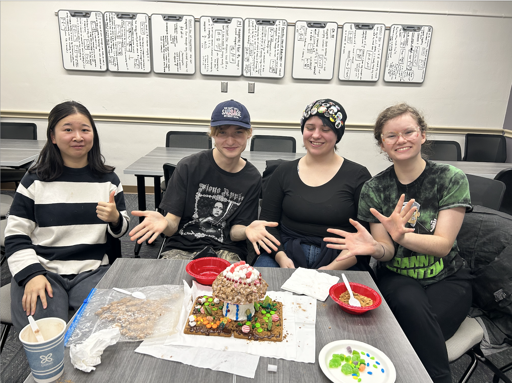

I am currently a junior at University of Wisconsin–Madison, double majoring in Data Science and Information Science.
Expected graduation date: June 2027
Relevant Courseworks:
Python, R-code, JavaScript, HTML, CSS
My passion is to leverage technology to create impactful solutions such as the field of educational technology.
Outside of school, I enjoy singing, cooking, creative writing, games, connecting with friends, and cross-cultural experiences.

Game Day with my friends and Buckey Badger our university mascot

Wining the ginger bread baking competetion at Costume Play and Design Guild

University Choir performance twice every semester